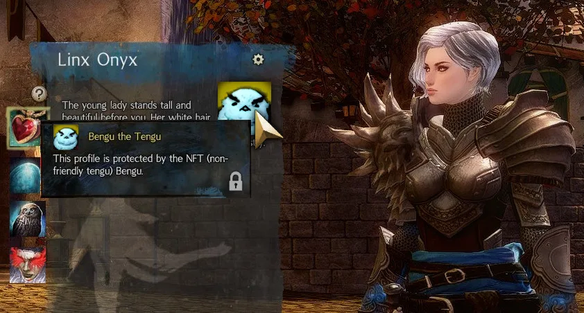
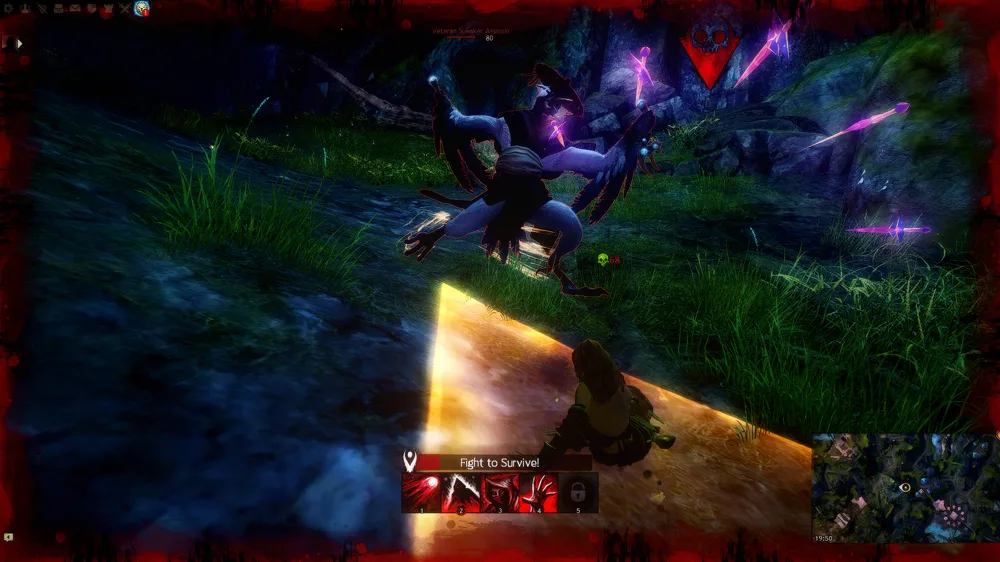

WARP patch announcement from 1 April 2022
As roleplayers, we love our characters. Especially, since every RP character is unique. But how do you know it's really yours? (Except, of course, that you got all the notes about your character, it's on your account, etc.) But how do you stop others from copying your character? That's why we'll bring NFTs to WARP!
We know that NFTs are a disputed topic, but we feel we're on the right path since NFTs in EoD are big in the coming and flying high. Get your character protected by an NFT!
Read more below!

As most of you already know, NFT stands for Non-Friendly Tengu. Those are small pictures of grim looking tengus that you put on your character profile, which will definitely deter people from stealing your character. Since we know that NFTs are a disputed topic, we wanted to answer the most common questions about NFTs beforehand:
How will the NFT protect my profile?
Imagine you got your very unique and original character “Aragron The Ranger”. After you've chosen an NFT, it will appear on your profile and look non-friendly. According to our research, this will already deter 99% of players from copying your unique character. For the rare case that your character still gets stolen, the tengu will seek out said player and talk with them about the intricate details of copyright.

Do WARP-NFTs use blockchain technology?
Most tengu just use bows or even just their claws for fighting. Though, we found that equipping them with chains made from metal cubes (=blocks) significantly increased the media attention for the topic. Some called it “complete misuse of narrowly applicable concept as a buzzword”, but we call it “free advertising”.
Will the NFT destroy my graphics card?
Each NFT takes some toll on the graphics card. But since we only use 2D images of tengus and not the real 3D deal, it should be barely noticeable and much lower than meeting any tengu ingame.
Is my NFT unique?
Well, yeah. It's a living, breathing (virtual) being. Also each tengu comes with a unique look.
By “unique” you mean “slight different color variations”?
Mimimimi. We said “unique”, not “unique in an interesting way”.
I'd rather like a monkey as NFT.
No. While we are strictly against racial discrimination, it's in the name: Non-Friendly TENGU. Anyone trying to sell you a monkey as NFT is clearly just trying to grab your cash.
Can I sell my NFT for millions of dollars?
Woah, slow down, buddy. You cannot trade humanoids. You also wouldn't sell a human as a minipet, right? Right.
Could I instead get some random number in some shared list?
I don't know how that would help you defend ownership claims for your character.
When will NFTs be available?
We think the patch will at least take two weeks after this announcement (which is released on April first). So you can start protecting your profile in late April. <3
…wait a minute! That's my profile in the preview screenshot! Did you steal my character and lock it with an NF
Thank you for your time! We're just as excited for the introduction of NFTs as you are, but we can only answer so many questions for now.